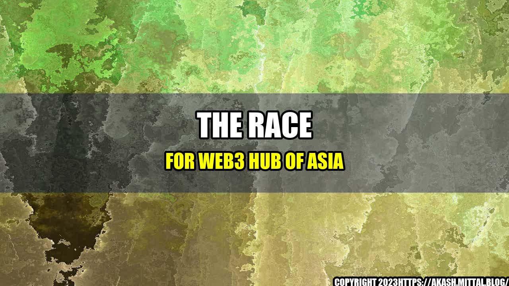

The Race for Web3 Hub of Asia

It all started in 2008 with the invention of Bitcoin, the world's first decentralized digital currency. Since then, blockchain technology has continued to evolve, offering new and exciting possibilities for businesses and individuals alike. Today, the race is on to become the Web3 hub of Asia, as countries compete to attract blockchain and cryptocurrency startups.
In this article, we will explore five major cities in Asia that are vying for the title of Web3 hub, and examine what each city has to offer:
- Hong Kong: Hong Kong is known as a global financial center, and its government has taken a proactive approach to blockchain regulation. The city has attracted a number of blockchain and cryptocurrency companies, including BitMEX, Tether, and Circle. However, Hong Kong is facing increasingly intense competition from other cities in the region.
- Singapore: Singapore has been a hub for finance and technology for many years, and is taking a proactive regulatory approach to blockchain and cryptocurrency. The city-state has attracted a number of blockchain startups, including TenX, Kyber Network, and Qtum. Singapore's government has also launched several initiatives to encourage blockchain development.
- Tokyo: Japan has been at the forefront of the blockchain industry, with exchanges like BitFlyer and Coincheck based in Tokyo. The Japanese government has also taken a proactive regulatory approach to blockchain and cryptocurrency. However, Tokyo is facing stiff competition from other cities in the region, and the recent Coincheck hack has raised questions about the security of cryptocurrency exchanges in Japan.
- Seoul: South Korea has emerged as a major player in the blockchain industry, with exchanges like Bithumb and Upbit based in Seoul. The city has also been home to several successful ICOs. The South Korean government has taken a relatively hands-off regulatory approach to blockchain and cryptocurrency, which has helped to attract startups to the city.
- Dubai: Dubai has set its sights on becoming a leader in blockchain and cryptocurrency, with the Dubai Blockchain Strategy aiming to become the first city fully powered by blockchain by 2020. Dubai has attracted a number of blockchain startups, including BitOasis, ArabianChain, and Adab Solutions.
Each of these cities has its own unique strengths and weaknesses when it comes to becoming the Web3 hub of Asia. For example, Hong Kong and Singapore both have well-established financial sectors and strong regulatory frameworks, while Seoul and Tokyo have a large pool of technical talent. Dubai, on the other hand, is relatively new to the blockchain industry, but is investing heavily in becoming a leader in the field.
So, which city will ultimately become the Web3 hub of Asia? Only time will tell. However, one thing is clear: the race is on, and the winner will have the potential to become the blockchain capital of the world.
Conclusion
- Asia is rapidly becoming a major player in the blockchain industry, and five cities in particular are vying for the title of Web3 hub: Hong Kong, Singapore, Tokyo, Seoul, and Dubai.
- Each of these cities has its own unique strengths and weaknesses, but all are working hard to attract blockchain and cryptocurrency startups.
- The ultimate winner of the Web3 hub race will have the potential to become the blockchain capital of the world.
References:
Article category: Technology
Curated by Team Akash.Mittal.Blog
Share on Twitter Share on LinkedIn